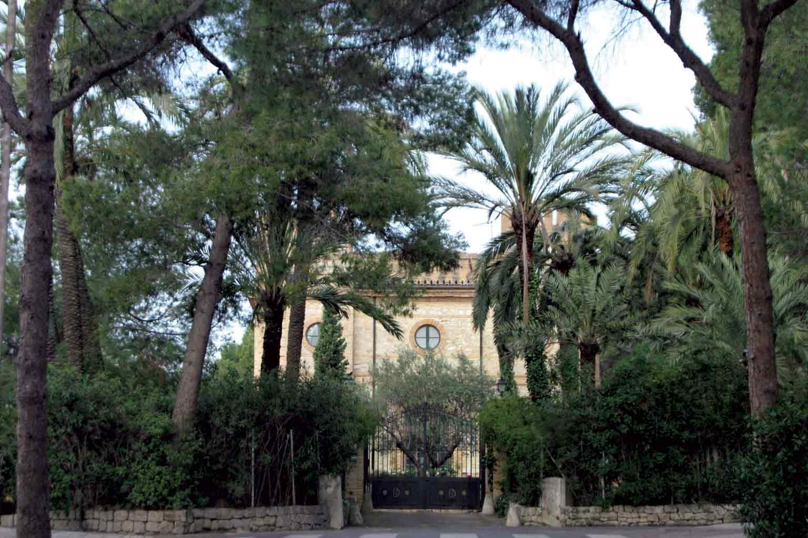
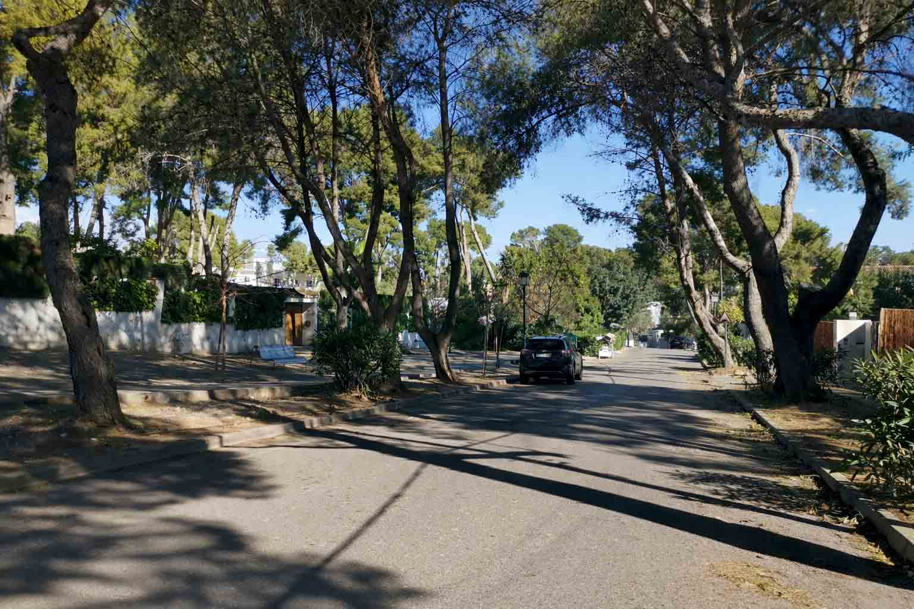
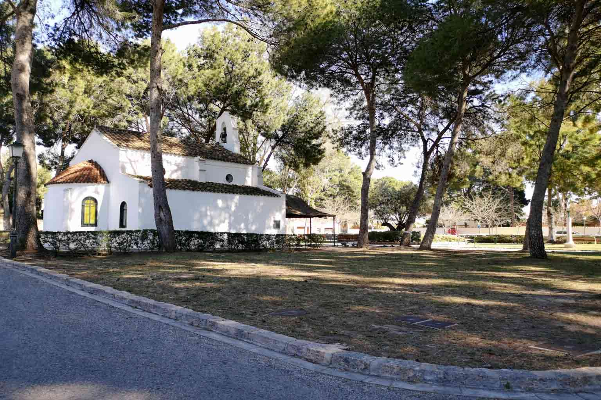

Una finca baronial en la colina
El territorio estuvo vinculado al histórico Barón de Campolivar, cuya residencia se alzaba en la colina que conecta lo que hoy son Godella y Rocafort. Antes de ser un barrio residencial, fue una finca baronial. Antes de ser un mercado inmobiliario, fue un territorio de prestigio.
Ese origen importa. Explica por qué Campolivar se percibe de forma distinta a las urbanizaciones que rodean Valencia — su reputación no la creó una campaña de marketing ni una promoción puntual, sino que se acumuló despacio, durante generaciones, sobre una tierra que siempre tuvo cierto peso.

Posicionamiento consolidado, no ostentación
Campolivar no es ostentación: es posicionamiento consolidado. El perfil predominante ha sido históricamente el de empresarios y directivos, profesionales liberales, familias con trayectorias económicas estables, y segundas generaciones que mantienen o renuevan el patrimonio familiar.
Es un entorno donde la privacidad, la baja densidad y la continuidad generacional son la norma. La gente no llega a Campolivar para hacer una declaración de estatus; llega — o se queda — porque el barrio encaja silenciosamente con una vida ya consolidada.
Minutos de la ciudad, un mundo aparte en sensación
Una propiedad en Campolivar no se justifica solo por la calidad de la construcción o el tamaño de la parcela. Se justifica por su ubicación estratégica: minutos de la capital valenciana, en un entorno elevado, ventilado y tranquilo, con acceso rápido a servicios, colegios privados de referencia y sanidad.
Esta es la rara combinación que define la zona — proximidad urbana real, a unos 15 minutos del centro, junto a la calma de una colina de baja densidad. En una zona donde la oferta es limitada y la demanda cualificada es constante, esa ubicación no es una comodidad; es el activo.

Espacio, aire y continuidad
Campolivar combina tres variables que rara vez coinciden de forma equilibrada: proximidad urbana real, un entorno residencial de baja densidad, y un prestigio histórico consolidado. En el día a día, eso se traduce en viviendas unifamiliares con jardín, calles tranquilas, y un entorno elevado y ventilado.
Colegios privados e internacionales de referencia, sanidad y toda la gama de servicios de la ciudad están a fácil alcance — lo bastante cerca para usarlos sin pensarlo, lo bastante lejos para dejarlos atrás al cruzar la verja.

Continuidad que protege el valor
Campolivar no es una moda ni una promoción reciente. Es una de las zonas residenciales clásicas del área de Valencia donde el prestigio no se improvisa: se hereda.
Y en el segmento donde se sitúa una propiedad de 1,4 millones de euros, esa continuidad histórica y social es precisamente lo que protege el valor a largo plazo. Aquí los compradores no adquieren un acabado o unos metros cuadrados; compran una posición que se ha mantenido durante generaciones y muestra todos los signos de seguir haciéndolo.